Case study · Instructor-led training · Hands-on workshop
SitecoreAI Agent Builder Workshop.
A five-hour, hands-on virtual workshop that takes marketers and developers from "what's an agent?" to building, testing, and refining their own AI agents in SitecoreAI.
- AudienceSitecore customers & partners
- My roleInstructional design & facilitator guide
- FormatVirtual ILT, labs & breakouts
- DeliverablesInstructor deck, notes & lab guide
The challenge
A brand-new capability that moves fast
SitecoreAI's Agent Builder gives teams a lot of options. They can use a prebuilt agent, configure one, duplicate and tailor one, or build their own Standard or Workflow agent. Learners didn't just need to know where the buttons were. They needed to decide which approach fits a real business problem, and to understand that the quality of an agent's output depends on the inputs and context it's given.
The workshop also had to run smoothly with different instructors, in different time zones, on live cloud environments where access problems can derail a class in the first ten minutes.
Structure
Concept, model, practice, apply
- Module 1
Decide
An agent decision model, then scenario polls where learners pick the simplest approach that fits the problem.
- Module 2
Understand inputs
What shapes agent output: brand kits, artifacts, skills, and tools, shown through live demos.
- Module 3
Build Standard
The instructor models a build, then learners build and test two Standard agents from real use cases.
- Module 4
Build Workflow
Small groups choose a use case and build, run, review, and refine a multi-step Workflow agent.
- Module 5
Share & take home
Group share-out, plus managing visibility, exporting agents, and cleaning up the environment.
Design decisions
Why it's built this way
Decisions before clicks
Transfer · problem-firstThe workshop opens with a decision model rather than a feature tour. Learners practice choosing an approach on realistic scenarios, explain their reasoning, and learn to pick the simplest option that works, including keeping some steps in human hands.
I do, we do, you do
Gradual release · scaffoldingEach build follows the same arc. The instructor models it, learners build alongside with the lab guide, then small groups build on their own. Support fades as learners gain confidence.
Real use cases
Authentic practiceEvery agent comes from a business problem marketers actually have, such as content optimization, persona audits, SEO rewrites, and shopper-persona revisions. Each one is laid out as a business need, what the agent does, what it returns, and how it's configured.
Iteration is the lesson
Formative feedbackEvery build ends with a test, review, and refine step. Learners see that a first draft of an agent is rarely the final one, which is the habit they need back on the job.
Built for any instructor
Scalable deliveryAll 63 slides have an instructor note and a word-for-word "Say" script, plus fallbacks for when things break, like running the polls in chat if Teams polls fail. Setup checkpoints at the start catch access and license problems before the first build.
Inside the deck
Selected slides
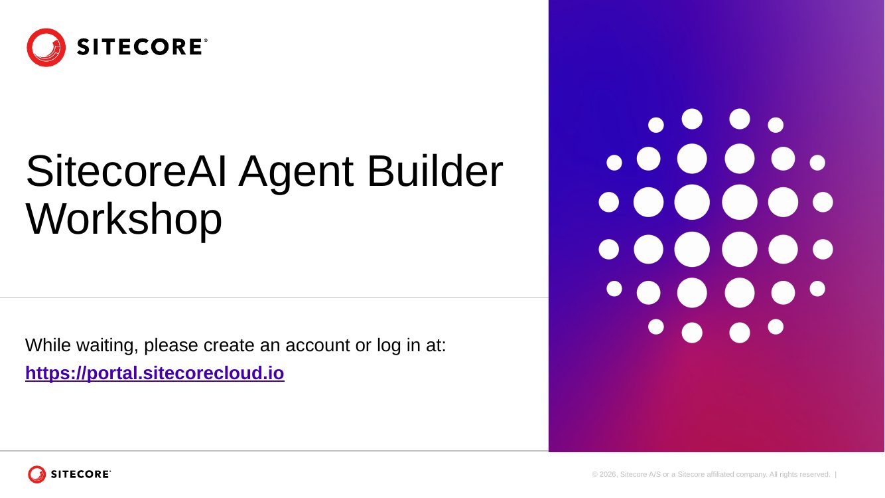
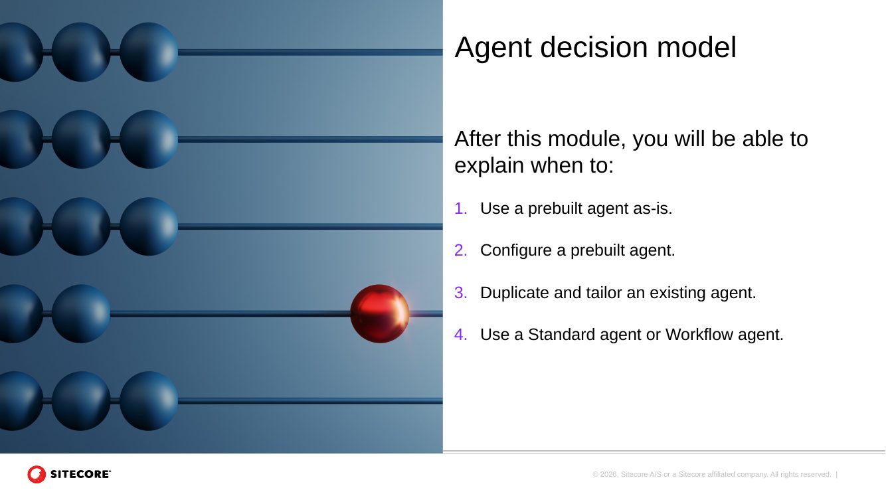
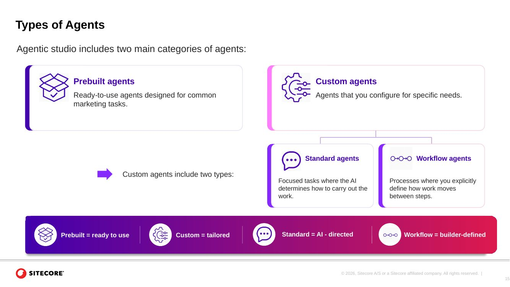

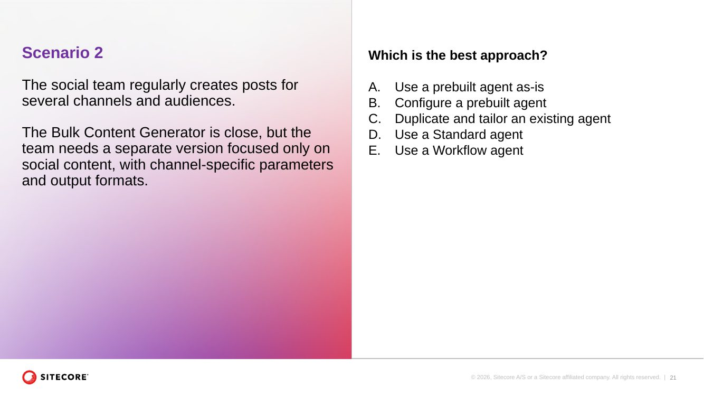
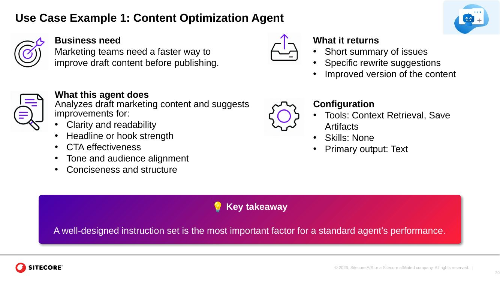
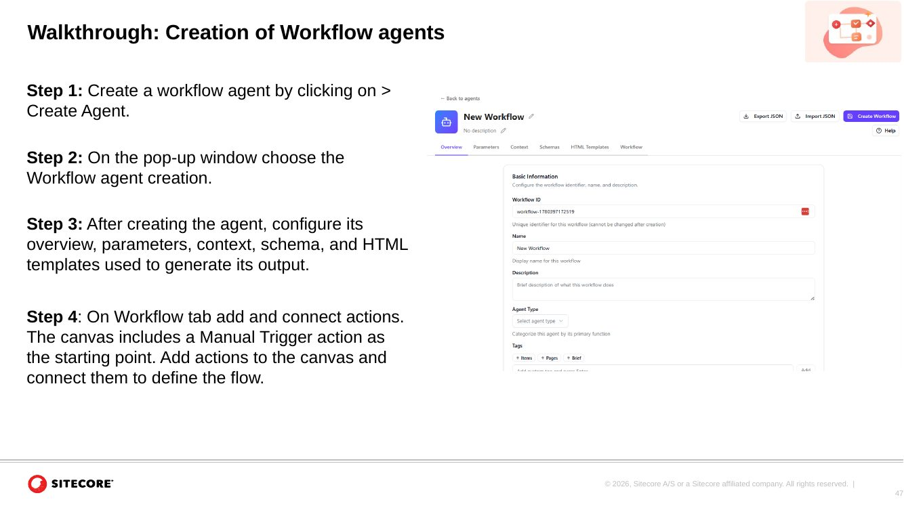
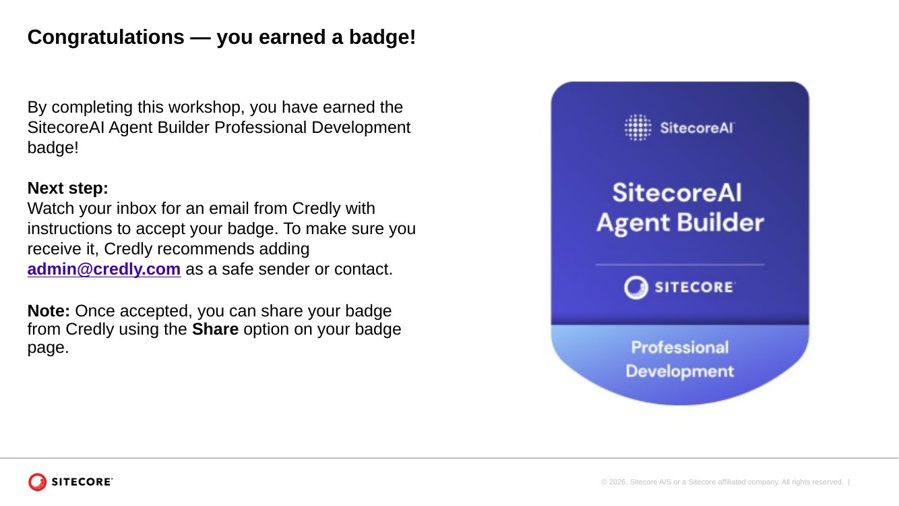
The lab guide
The learner's build path
The slides run the room. The 186-page lab guide is what learners actually follow while building. It's organized into 10 lessons that mirror the workshop, from environment access through two Standard agent demos and two Workflow agent builds to a wrap-up. The workshop is free and public, and learners keep access after class so they can rebuild the agents on their own.
Every build uses the same seven-step loop: start with a use case, choose the approach, configure, run, review, refine, and run again. Each task opens with a four-part brief (business need, what the agent does, what it returns, and how it's configured) before any step-by-step instructions, so learners understand the why before the how. Breakouts get discussion prompts and suggested group roles, and the guide ends with reflection questions about applying agents to the learner's own work.
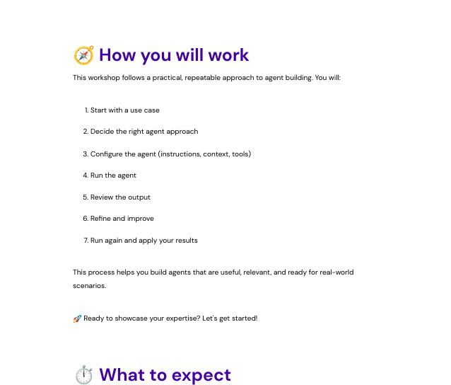
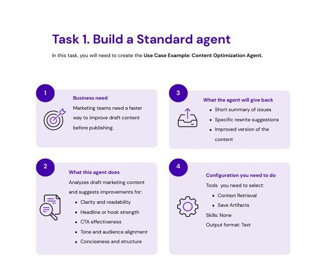
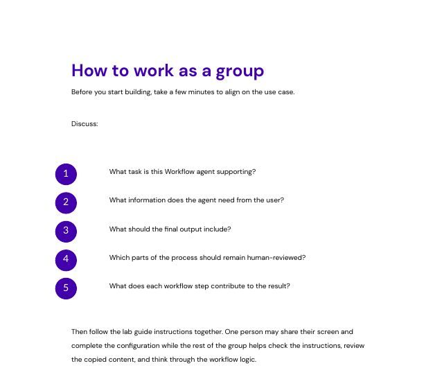
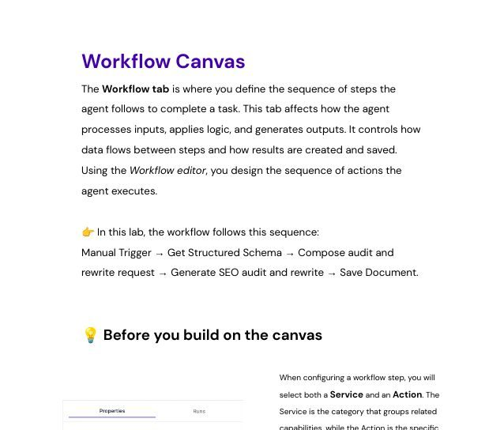
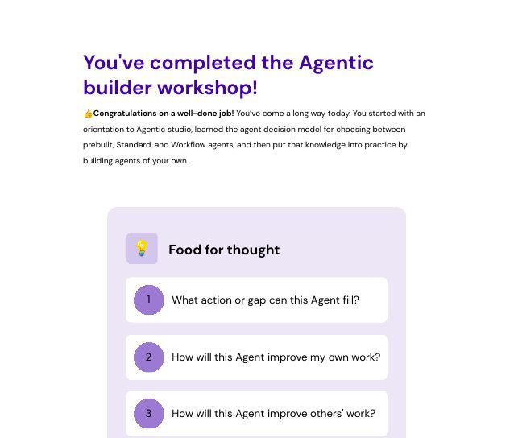
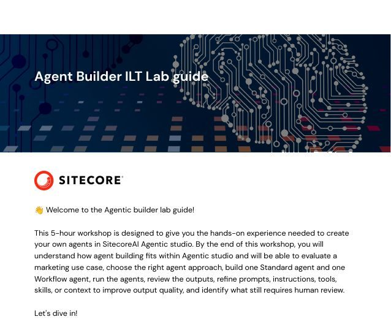
Facilitator guide sample
From the speaker notes
Instructor note · Slide 19, scenario activity
The goal of this activity is not only for learners to choose the "right" answer. The more important part is that they explain their reasoning and practice choosing the simplest agent approach that fits the use case.
Say
There may be some scenarios where more than one answer feels possible. That is okay. The purpose is to practice the reasoning behind the decision.